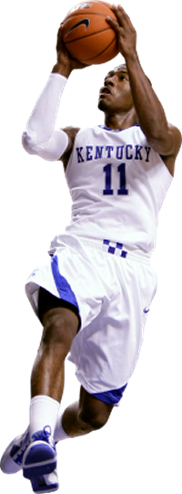

2010 KENTUCKY BASKETBALL

Kentcuky Basketball was my favorite basketball team to watch this year. From being a Kentucky fan since my sister went there, this season was the most exciting ever! First year head coach John Calipari transformed the team with his recruiting abilities having the best recruiting class in the country. The recruits included first team all freshmen John Wall and DeMarcus Cousins. Others included Erik Bledsoe, Kyle Orton, and Jon Hood. We also had the force of Patrick Patterson the all american junior.
Kentucky had a strong year this year finishing the season at 35-3. They lost in the elite eight of the basketball tournament this year against West Virginia.